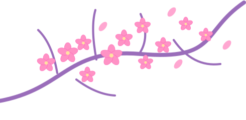
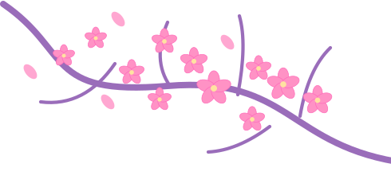
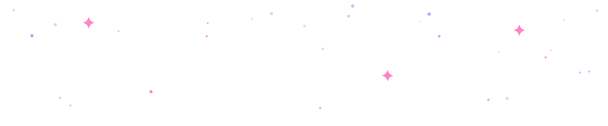
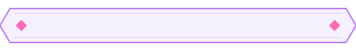
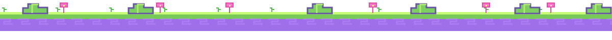

AI / ML Engineer · Fantasy game-inspired portfolio
Clean cards and delightful ornamentation, without sacrificing readability.
AI / Machine LearningOriginal content stays in HTML — use the vectors to decorate around it.
Quest 01Mountains, sakura, clouds, ornate corners, and pixel-ground scenery, for dark mode.

